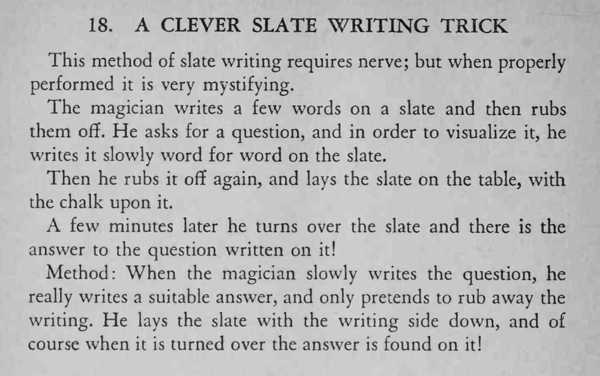

魔术师把观众的问题慢慢写在石板上又擦掉，几分钟后把石板翻过来，上面竟写好了问题的答案。
关键在擦的时候只擦掉部分、留下完整答案，表演要非常镇定。

This method of slate writing requires nerve; but when properly performed it is very mystifying. The magician writes a few words on a slate and then rubs them off. He asks for a question, and in order to visualize it, he writes it slowly word for word on the slate. Then he rubs it ofif again, and lays the slate on the table, with the chalk upon it. A few minutes later he turns over the slate and there is the answer to the question written on it! Method: When the magician slowly writes the question, he really writes a suitable answer, and only pretends to rub away the writing. He lays the slate with the writing side down, and of course when it is turned over the answer is found on it!